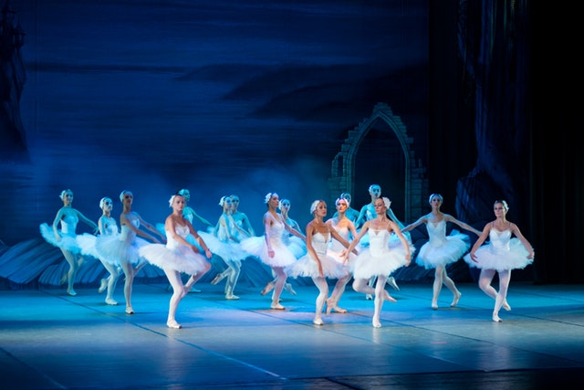

Broadway Musicals
If you are in Times Square, be sure to see the best Broadway hits like Hamilton and long-time-running shows such as The Lion King. There's lots of variety to suit your taste. Click here to book your tickets.
New York Comedy Festival

This year's festival comedians include, Tracy Morgan, Trevor Noah, Bridget Everett and many more! New York Comedy Festival starts Tuesday, November 7, 2017 through Sunday, November 12,2017. Click here to book your tickets to the hilarious spectacle.